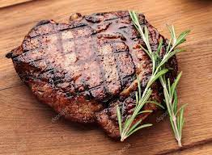

Steak

Description
A steak, also sometimes called "beef steak", is a meat generally sliced across the muscle fibers, potentially including a bone. It is normally grilled, though it can also be pan-fried. Steak can also be cooked in sauce, such as in steak and kidney pie, or minced and formed into patties, such as hamburgers.
Besides cattle, steaks are also often cut from other animals, including bison, camel, goat, horse, kangaroo,[1][2] sheep, ostrich, pigs, reindeer, turkey, deer, and zebu, as well as various types of fish, especially salmon and large fish such as swordfish, shark, and marlin. For some meats, such as pork, lamb and mutton, chevon, and veal, these cuts are often referred to as chops. Some cured meat, such as gammon, is commonly served as steak.
Ingredients:
- 1 cup red wine
- 1 teaspoon salt
- 1 sprig fresh rosemary
- 4 New York strip steaks, cut 1-inch thick
Steps:
- Combine the red wine, salt and rosemary in a small bowl. Let stand at room temperature for 2 to 3 hours.
- Heat a large griddle or cast-iron skillet over high heat. Place the steaks on the hot pan, and cook for about 8 minutes per side, or to desired degree of doneness. The internal temperature should be at least 145 degrees F (62 degrees C) for medium rare. Pour in the wine mixture, and allow it to boil for a minute. Serve steaks with sauce on a deep platter.